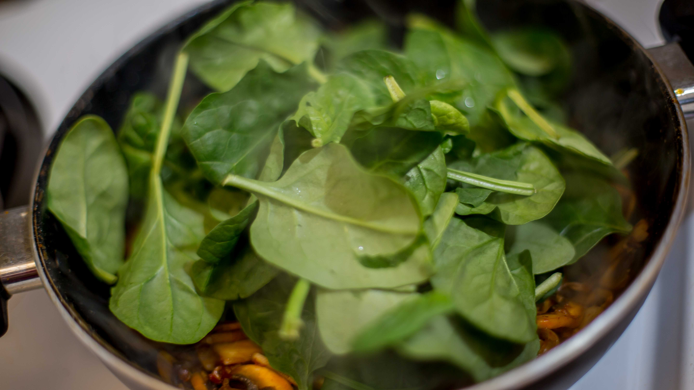
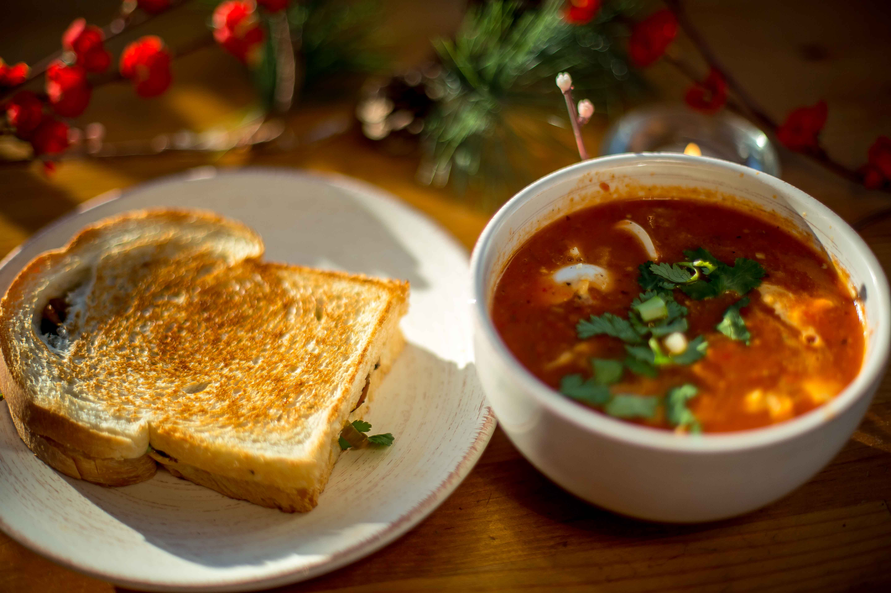

I lived in Kota, a city in Rajasthan, India for two years and this was my first taste of living away from home and the comforts of mom's kitchen. However, India has no shortage of outstanding food that is easily available. Well, so does Vancouver but #dilmeradesi (my heart is desi) and it only wants authentic flavors that i grew up with. My best friend visited me for four days during the indian monsoon from New Delhi and we spent those days holed up in my rental room, eating mushroom cheese sandwiches and cold coffee that we got delivered from a local restaurant. Those four days were the best - in terms of company, food, music and fun. When we moved to Vancouver, we totally forgot about the sandwiches but were hit by a wave of nostalgia one day; so we decided to make our own version of the special mushroom cheese sandwiches. We haven't looked back since. Our only regret? Why didn't we try it sooner?
- White button mushrooms, 6-7
- Onion, halved
- Garlic cloves, 2-3
- Spinach
- Indian chilli paste
- Spring onion
- Cilantro
- Butter, optional
- Oil
- Black pepper, freshly ground
- Salt, to taste
Instructions
Finely chop the garlic, onions and mushrooms.
Chop the spring onions and cilantro and keep ready to garnish.
In a pan, heat a tsp of oil and then add butter.
Add the garlic and saute until it changes color.
Mix in a tbsp or two (depending on your spice tolerance) of chilli paste and stir well.
Add in the onions and mix.
The mushrooms go in and are sauteed till they shrink in size and change their color.
Add the spinach. Cook till shriveled.
The black pepper and salt go in now.
Take two slices of your favorite bread.
Place the mushroom spinach filling on one slice and a slice of cheddar cheese on the other.
Garnish the filling with slices of smoked mozzarella cheese, spring onions and cilantro.
Toast on a hot skillet with butter.
Enjoy with a hot bowl of your favorite soup or a warm cup of tea or coffee.